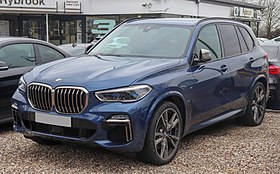
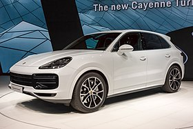

BMW X5 |
|
|---|---|
|  more images |
The BMW X5 is a mid-size, rear-wheel drive luxury SUV produced by BMW. The X5 made its debut in 1999. It was BMW's first SUV and it also featured all-wheel drive and was available with either manual or automatic transmission. In 2006, the second generation X5 was launched, known internally as the E70, featuring the torque-split capable xDrive all-wheel drive system mated to an automatic transmission, and in 2009 the X5 M performance variant was released as a 2010 model. |
Porsche Cayenne |
|
|---|---|
|  more images |
The Porsche Cayenne is a mid-size luxury crossover sport utility vehicle produced by the German manufacturer Porsche since 2002, with North American sales beginning in 2003. It is the first V8-engined vehicle built by Porsche since 1995, when the Porsche 928 was discontinued. It is also Porsche's first off-road variant vehicle since its Super and Junior tractors of the 1950s, and the first Porsche with four doors. Since 2008, all engines have featured direct injection technology. |